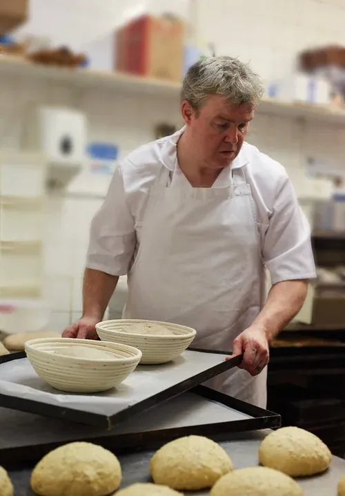
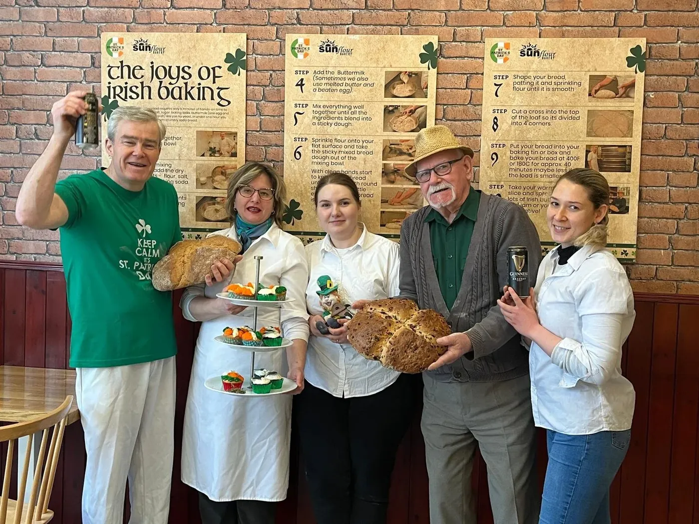
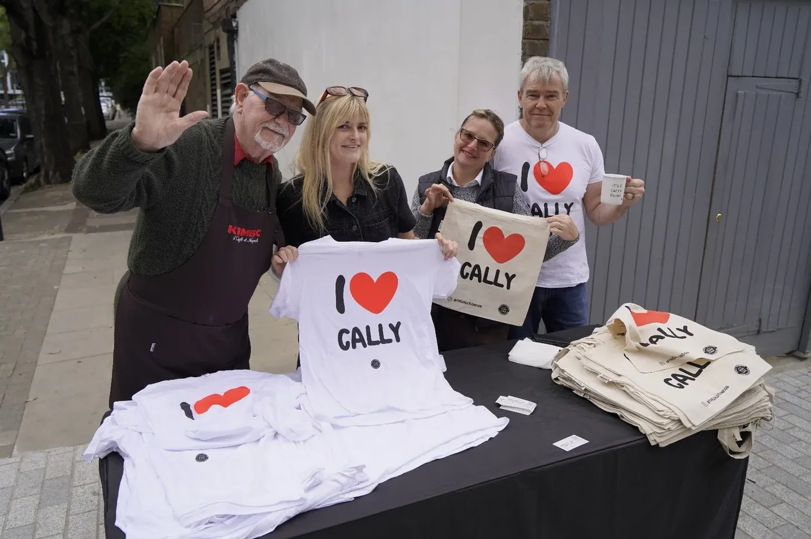
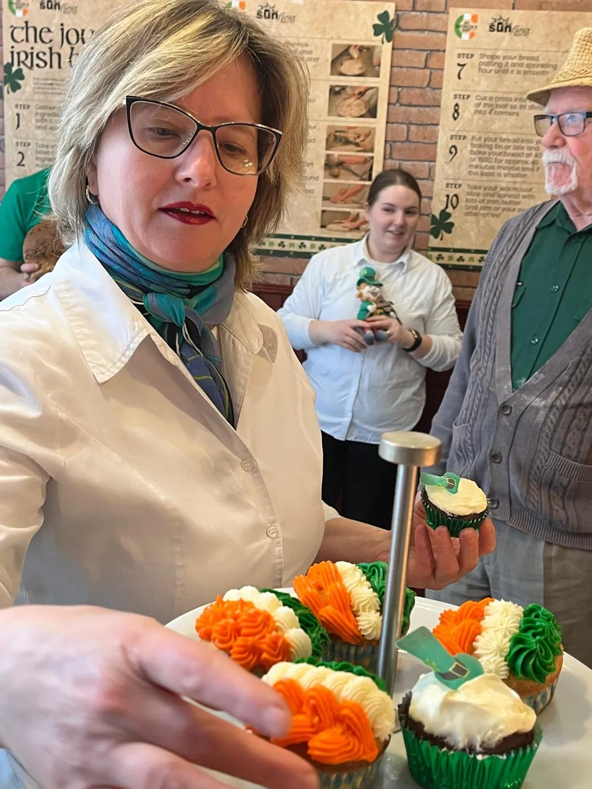

A little taste of home, since 2013.
Sunflour Bakery was founded by Paul O’Brien and Gabriela Cristea to bring artisan bread and homemade food to Caledonian Road.

From Borough Market to Caledonian Road
Paul and Gabriela met working together at Degustibus in Borough Market, London Bridge. In December 2013 they opened Sunflour Bakery on Caledonian Road, with a simple aim: to bring real artisan bread and homemade food to the neighbourhood.
Today our bread and cakes are still made fresh on site every day, and we supply local restaurants and cafés too. Our soups and stews are made from scratch, with meat sourced from Smithfield Market.


Meet Paul & Gabriela
Paul O’Brien
Paul has over 30 years of baking experience. From sourdough to soda bread, he leads the bakery and shapes the loaves our customers love. He’s also the person to talk to about catering.
Gabriela Cristea
Gabriela brings a broad cooking background and a passion for cuisines from around the world. She bakes our cakes and creates the homemade food served in the café.
Baking with heart and soul
Paul and Gabriela work together at Degustibus, London Bridge.
Sunflour Bakery opens at 263 Caledonian Road.
Bread and cakes made on site, and supplied to local restaurants and cafés.
Catering for up to 200 guests, plus bespoke celebration cakes.
The faces behind the bread
Moments from our bakery and our community on Caledonian Road.

Celebrating Irish baking

Proud of the Cally

Part of the community
Find us on Caledonian Road
Freshly baked favourites are waiting for you, a short walk from Caledonian Road station and King’s Cross.
- Monday – Friday7:30 – 16:30
- Saturday8:00 – 16:30
- SundayClosed
- Phone / WhatsApp07734 006471